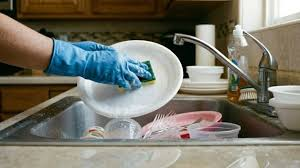
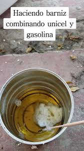
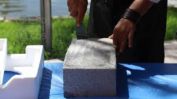

¿Cómo funciona?
1. Recolección

Se recolecta el unicel de hogares, escuelas, comercios y centros de acopio para evitar que termine contaminando el medio ambiente.
2. Limpieza

Todo el material es limpiado cuidadosamente para eliminar polvo, tierra y cualquier residuo que pueda afectar el proceso de reciclaje.
3. Triturado

El unicel limpio se tritura hasta obtener pequeñas partículas que facilitan su procesamiento y reutilización.
4. Transformación

Mediante un proceso especializado el material reciclado se convierte en un recubrimiento impermeabilizante de alta calidad.
5. Producto Final

Se obtiene un impermeabilizante elaborado con material reciclado que ayuda a disminuir la contaminación ambiental.